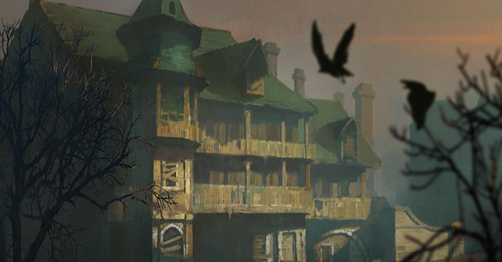
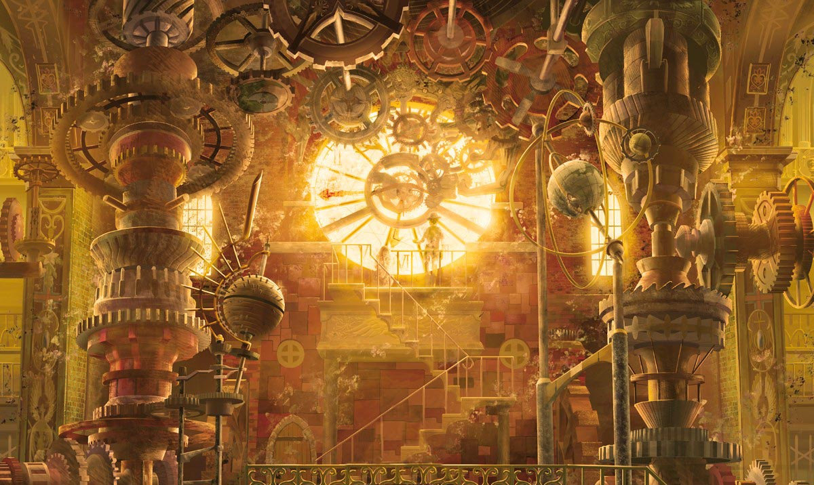

<!DOCTYPE html>
<html style="height: 100%;">
<head>
  <!-- Page Title -->
  <title>Waterdeep Map</title>

  <!-- Responsive design meta tag -->
  <meta name="viewport" content="width=device-width, initial-scale=1.0">

  <!-- Stylesheets -->
  <link rel="stylesheet" href="scripts/leaflet.css">
  <link rel="stylesheet" href="scripts/updated-leaflet-search.min.css">

  <!-- JavaScript Libraries -->
  <script src="scripts/leaflet.js"></script>
  <script src="scripts/leaflet-search.min.js"></script>
  
</head>


<body style="height: 100%; margin: 0;">
  <!-- Map Container -->
  <div id="map" style="width: 100%; height: 100%; background: #6d7993;"></div>

  <script type="text/javascript">
  
  
  
    // Initialize the map
    var map = L.map('map').setView([0, 0], 0);
    L.tileLayer('map/{z}/{x}/{y}.png', {
      continuousWorld: false,
      noWrap: true,  
      minZoom: 2,
      maxZoom: 6,
    }).addTo(map);
    
    map.setView([62.714462, 21.291504], 4);
	<!-- Map Boundies -->
	//var mapSW = [-84,-109], mapNE = [83.5,123.5];
	//map.setMaxBounds(new L.LatLngBounds(mapSW, mapNE));	
	
	
	
	// Custom control for displaying an image in a popup
	var ImagePopoutControl = L.Control.extend({
		onAdd: function(map) {
			var container = L.DomUtil.create('div', 'leaflet-control leaflet-bar');
			var button = L.DomUtil.create('a', '', container);
			button.style.backgroundImage = "url('scripts/images/side_view.png')";
			button.style.backgroundSize = 'contain';
			button.style.backgroundRepeat = 'no-repeat';
			button.style.backgroundPosition = 'center';
			button.href = '#';
			button.style.width = '30px';
			button.style.height = '30px';
			button.style.display = 'block';

			var popoutDiv; // Declare popoutDiv outside so it's accessible in the button click listener

			// Event listener for mouse click
			button.onclick = function(e) {
				e.preventDefault(); // Prevent default anchor behavior

				// Toggle the popout div based on its existence
				if (!popoutDiv) {
					popoutDiv = document.createElement('div');
					popoutDiv.style.position = 'absolute';
					popoutDiv.style.left = '50px';
					popoutDiv.style.top = '10px';
					popoutDiv.style.width = '40%';
					popoutDiv.style.height = 'auto';
					popoutDiv.style.zIndex = '1000';
					popoutDiv.style.pointerEvents = 'auto';

					var image = document.createElement('img');
					image.src = 'images/waterdeep.png';
					image.style.width = '100%';
					image.style.height = 'auto';
					popoutDiv.appendChild(image);

					map.getContainer().appendChild(popoutDiv);
				} else {
					// Remove the popout if it's already visible
					map.getContainer().removeChild(popoutDiv);
					popoutDiv = null;
				}
			};

			// Global click listener to close the popout
			document.addEventListener('click', function(event) {
				if (popoutDiv && !popoutDiv.contains(event.target) && !button.contains(event.target)) {
					// Remove the popout if the click is outside the popout and not on the button itself
					map.getContainer().removeChild(popoutDiv);
					popoutDiv = null; // Nullify the popoutDiv reference
				}
			});

			return container;
		},
	});

	// Add the new control to the map
	map.addControl(new ImagePopoutControl({ position: 'topleft' }));


	
	// Custom control for hiding/showing all markers
	var HideShowControl = L.Control.extend({
		onAdd: function(map) {
			var container = L.DomUtil.create('div', 'leaflet-control leaflet-bar');
			var button = L.DomUtil.create('a', '', container);

			// Set initial background image to 'show.png'
			button.style.backgroundImage = "url('scripts/images/show.png')";
			button.style.backgroundSize = 'contain';  // Ensure the icon size fits the button
			button.style.backgroundRepeat = 'no-repeat';
			button.style.backgroundPosition = 'center';
			button.href = '#';
			button.style.width = '30px';  // Adjust width as needed
			button.style.height = '30px';  // Adjust height as needed
			button.style.display = 'block';  // Changed from 'marker' to 'inline-block'

			button.onclick = function() {
				console.log('Toggle Visibility');
				toggleMarkers(button);  // Pass the button element to the function
				return false;
			};

			return container;
		}
	});

	// Function to toggle markers and switch icons
	var markersVisible = true;

	function toggleMarkers(button) {
		if (markersVisible) {
			for (var layer in overlays) {
				map.removeLayer(overlays[layer]);
			}
			button.style.backgroundImage = "url('scripts/images/hide.png')";  // Change to 'hide.png'
			markersVisible = false;
		} else {
			for (var layer in overlays) {
				map.addLayer(overlays[layer]);
			}
			button.style.backgroundImage = "url('scripts/images/show.png')";  // Change back to 'show.png'
			markersVisible = true;
		}
	}

	// Add the new control to the map
	map.addControl(new HideShowControl({ position: 'topright' }));

	
	
	
    // Define Icons for different locations
    var Base = L.icon({
		iconUrl:       'icons/base.png',
		iconRetinaUrl: 'icons/base.png',
		shadowUrl:     'scripts/images/marker-shadow.png',
		iconSize:    [25, 41],
		iconAnchor:  [12, 41],
		popupAnchor: [1, -34],
		tooltipAnchor: [2, -28],
		shadowSize:  [41, 41]
	});
	
    var Academy = L.icon({
		iconUrl:       'icons/academy.png',
		iconRetinaUrl: 'icons/academy.png',
		shadowUrl:     'scripts/images/marker-shadow.png',
		iconSize:    [25, 41],
		iconAnchor:  [12, 41],
		popupAnchor: [1, -34],
		tooltipAnchor: [2, -28],
		shadowSize:  [41, 41]
	});
	
	var Business = L.icon({
		iconUrl:       'icons/businesses.png',
		iconRetinaUrl: 'icons/businesses.png',
		shadowUrl:     'scripts/images/marker-shadow.png',
		iconSize:    [25, 41],
		iconAnchor:  [12, 41],
		popupAnchor: [1, -34],
		tooltipAnchor: [2, -28],
		shadowSize:  [41, 41]
	});
	
	var City_Building = L.icon({
		iconUrl:       'icons/city_building.png',
		iconRetinaUrl: 'icons/city_building.png',
		shadowUrl:     'scripts/images/marker-shadow.png',
		iconSize:    [25, 41],
		iconAnchor:  [12, 41],
		popupAnchor: [1, -34],
		tooltipAnchor: [2, -28],
		shadowSize:  [41, 41]
	});
	
	var Guildhall = L.icon({
		iconUrl:       'icons/guildhall.png',
		iconRetinaUrl: 'icons/guildhall.png',
		shadowUrl:     'scripts/images/marker-shadow.png',
		iconSize:    [25, 41],
		iconAnchor:  [12, 41],
		popupAnchor: [1, -34],
		tooltipAnchor: [2, -28],
		shadowSize:  [41, 41]
	});
	
	var Noble_Villa = L.icon({
		iconUrl:       'icons/noble_villa.png',
		iconRetinaUrl: 'icons/noble_villa.png',
		shadowUrl:     'scripts/images/marker-shadow.png',
		iconSize:    [25, 41],
		iconAnchor:  [12, 41],
		popupAnchor: [1, -34],
		tooltipAnchor: [2, -28],
		shadowSize:  [41, 41]
	});
	
	var Residence = L.icon({
		iconUrl:       'icons/residence.png',
		iconRetinaUrl: 'icons/residence.png',
		shadowUrl:     'scripts/images/marker-shadow.png',
		iconSize:    [25, 41],
		iconAnchor:  [12, 41],
		popupAnchor: [1, -34],
		tooltipAnchor: [2, -28],
		shadowSize:  [41, 41]
	});
	
	var Places_Streets = L.icon({
		iconUrl:       'icons/streets.png',
		iconRetinaUrl: 'icons/streets.png',
		shadowUrl:     'scripts/images/marker-shadow.png',
		iconSize:    [25, 41],
		iconAnchor:  [12, 41],
		popupAnchor: [1, -34],
		tooltipAnchor: [2, -28],
		shadowSize:  [41, 41]
	});
	
	var Inn_Tavern_Festhall = L.icon({
		iconUrl:       'icons/tavern.png',
		iconRetinaUrl: 'icons/tavern.png',
		shadowUrl:     'scripts/images/marker-shadow.png',
		iconSize:    [25, 41],
		iconAnchor:  [12, 41],
		popupAnchor: [1, -34],
		tooltipAnchor: [2, -28],
		shadowSize:  [41, 41]
	});
	
	var Miscellaneous = L.icon({
		iconUrl:       'icons/miscellaneous.png',
		iconRetinaUrl: 'icons/miscellaneous.png',
		shadowUrl:     'scripts/images/marker-shadow.png',
		iconSize:    [25, 41],
		iconAnchor:  [12, 41],
		popupAnchor: [1, -34],
		tooltipAnchor: [2, -28],
		shadowSize:  [41, 41]
	});
	
	var Temple = L.icon({
		iconUrl:       'icons/temple.png',
		iconRetinaUrl: 'icons/temple.png',
		shadowUrl:     'scripts/images/marker-shadow.png',
		iconSize:    [25, 41],
		iconAnchor:  [12, 41],
		popupAnchor: [1, -34],
		tooltipAnchor: [2, -28],
		shadowSize:  [41, 41]
	});
	
	var Warehouse = L.icon({
		iconUrl:       'icons/warehouse.png',
		iconRetinaUrl: 'icons/warehouse.png',
		shadowUrl:     'scripts/images/marker-shadow.png',
		iconSize:    [25, 41],
		iconAnchor:  [12, 41],
		popupAnchor: [1, -34],
		tooltipAnchor: [2, -28],
		shadowSize:  [41, 41]
	});
	
	
	// Draggable marker for coordinate finding
    var marker = L.marker([0, 0], {
      draggable: true,
    }).addTo(map);
    marker.bindPopup('LatLng Marker').openPopup();
    marker.on('dragend', function(e) {
      marker.getPopup().setContent(marker.getLatLng().toString()).openOn(map);
    });
	
    // Layer for searchable markers
    var searchableLayer = L.layerGroup().addTo(map);

    // Markers for various locations
	
		var fieldward = L.polygon([
		[79.726446, -47.48291],
		[79.702907, -44.58252],
		[79.596318, -40.847168],
		[79.420275, -35.024414],
		[79.063478, -28.388672],
		[77.584684, -3.625488],
		[77.331809, 2.548828],
		[75.888091, 18.369141],
		[75.286578, 22.961426],
		[74.419877, 28.168945],
		[73.415885, 32.67334],
		[72.315785, 36.694336],
		[69.488372, 45.17578],
		[68.9505, 44.846191],
		[66.93006, 45.351563],
		[65.910623, 44.912109],
		[65.366837, 44.165039],
		[61.438767, 44.472656],
		[59.998986, 44.67041],
		[59.265881, 44.692383],
		[58.286395, 43.94531],
		[58.309489, 43.110352],
		[60.174306, 42.93457],
		[63.714455, 41.484375],
		[66.705169, 39.726563],
		[69.372573, 35.48584],
		[70.743478, 27.509766],
		[71.510978, 20.083008],
		[72.580829, 13.095703],
		[72.790088, 9.140625],
		[72.796588, 6.98],
		[72.861457, 4.724121],
		[73.207666, 0.74707],
		[73.983207, -6.679688],
		[74.595946, -13.886719],
		[75.292158, -21.467285],
		[76.216441, -28.278809],
		[77.191306, -33.046875],
		[78.260332, -36.870117],
		[78.152551, -41.660156],
		[77.470796, -46.582031],
		[79.063478, -50.163574]
		], {
		color: 'black',
		fillColor: 'green',
		opacity: 0,
		fillOpacity: 0.3 // Adjust fill opacity as needed
		})
		.bindPopup('<b>Field Ward</b>')
		.bindTooltip('Field Ward', { permanent: false, direction: 'top' })
		.addTo(map);
	
	
		var northward = L.polygon([
		[58.309489, 43.110352],
		[60.174306, 42.93457],
		[63.714455, 41.484375],
		[66.705169, 39.726563],
		[69.372573, 35.48584],
		[70.743478, 27.509766],
		[71.510978, 20.083008],
		[72.580829, 13.095703],
		[72.790088, 9.140625],
		[72.796588, 6.98],
		[71.910888, 6.547852],
		[64.997939, 6.767578],
		[64.90491, -5.493164],
		[38.013476, -5.844727],
		[38.048091, 0.98877],
		[37.909534, 2.636719],
		[35.978006, 6.899414],
		[32.472695, 7.668457],
		[32.602362, 9.931641],
		[30.921076, 14.172363],
		[27.25463, 15.446777],
		[25.562265, 16.743164],
		[25.264568, 17.402344],
		[25.244696, 19.006348],
		[19.766704, 20.983887],
		[18.85431, 21.84082],
		[16.003576, 26.433105],
		[17.119793, 27.114258],
		[20.324024, 28.54248],
		[21.145992, 29.091797],
		[23.5237, 32.102051],
		[25.324167, 33.991699],
		[25.443275, 37.573242],
		[25.443275, 38.562012],
		[20.097206, 45.81298],
		[20.03529, 46.845703],
		[20.509355, 47.021484],
		[22.024546, 47.219238],
		[22.958393, 47.592773],
		[23.905927, 47.768555],
		[24.367114, 48.186035],
		[25.938287, 48.208008],
		[26.961246, 48.383789],
		[28.786918, 48.120117],
		[29.51611, 47.8125],
		[30.240086, 48.22998],
		[31.052934, 48.076172],
		[31.653381, 48.47168],
		[33.742613, 47.702637],
		[34.397845, 47.680664],
		[35.995785, 46.647949],
		[37.177826, 47.131348],
		[37.944198, 46.779785],
		[39.232253, 47.329102],
		[40.010787, 47.087402],
		[40.597271, 47.351074],
		[41.327326, 46.779785],
		[44.182204, 46.362305],
		[46.073231, 46.647949],
		[47.532038, 45.966797],
		[48.239309, 45.966797],
		[48.936935, 46.538086],
		[49.866317, 44.890137],
		[54.110943, 43.527832],
		[54.737308, 43.352051]
		], {
		color: 'black',
		fillColor: 'yellow',
		opacity: 0,
		fillOpacity: 0.3 // Adjust fill opacity as needed
		})
		.bindPopup('<b>North Ward</b>')
		.bindTooltip('North Ward', { permanent: false, direction: 'top' })
		.addTo(map);


		var seaward = L.polygon([
		[76.247817, -51.28418],
		[76.026709, -51.767578],
		[69.526834, -58.447266],
		[63.450509, -58.183594],
		[62.965212, -58.293457],
		[61.227957, -58.820801],
		[59.64554, -59.523926],
		[59.64554, -59.523926],
		[59.734253, -60.205078],
		[60.042904, -61.853027],
		[60.250716, -63.237305],
		[58.904646, -64.006348],
		[58.390197, -61.105957],
		[58.240164, -60.534668],
		[57.844751, -60.556641],
		[54.278055, -61.171875],
		[53.956086, -61.325684],
		[53.709714, -61.677246],
		[50.611132, -66.247559],
		[49.138597, -66.708984],
		[47.916342, -67.653809],
		[47.398349, -67.895508],
		[45.890008, -67.763672],
		[45.444717, -67.258301],
		[45.058001, -65.10498],
		[45.336702, -64.467773],
		[45.460131, -63.303223],
		[46.027482, -50.141602],
		[45.935871, -28.674316],
		[46.118942, -26.257324],
		[46.21025, -25.510254],
		[45.95115, -5.844727],
		[64.90491, -5.493164],
		[64.997939, 6.767578],
		[71.910888, 6.547852],
		[72.796588, 6.98],
		[72.861457, 4.724121],
		[73.207666, 0.74707],
		[73.983207, -6.679688],
		[74.595946, -13.886719],
		[75.292158, -21.467285],
		[76.216441, -28.278809],
		[77.191306, -33.046875],
		[78.260332, -36.870117],
		[78.152551, -41.660156],
		[77.470796, -46.582031]
		], {
		color: 'black',
		fillColor: 'blue',
		opacity: 0,
		fillOpacity: 0.3 // Adjust fill opacity as needed
		})
		.bindPopup('<b>Sea Ward</b>')
		.bindTooltip('Sea Ward', { permanent: false, direction: 'top' })
		.addTo(map);


		var cityofthedead = L.polygon([
		[20.097206, 45.81298],
		[25.443275, 38.562012],
		[25.443275, 37.573242],
		[25.324167, 33.991699],
		[23.5237, 32.102051],
		[21.145992, 29.091797],
		[20.324024, 28.54248],
		[17.119793, 27.114258],
		[16.003576, 26.433105],
		[15.083725, 25.601309],
		[12.200215, 23.363979],
		[11.348458, 22.835721],
		[8.102408, 21.406316],
		[0.920334, 21.452927],
		[-2.652192, 21.080038],
		[-3.645047, 20.878057],
		[-8.189742, 19.489746],
		[-11.609193, 28.344727],
		[-11.996338, 29.289551],
		[-13.816744, 31.530762],
		[-14.370834, 32.431641],
		[-15.601875, 34.848633],
		[-15.982454, 35.771484],
		[-16.573023, 38.496094],
		[-16.867634, 39.287109],
		//
		[-16.151369, 39.353027],
		[-10.768556, 39.572754],
		[-9.730714, 39.726563],
		[-3.557283, 41.022949],
		[-2.482133, 41.264648],
		[4.324501, 42.143555],
		[5.375398, 42.297363],
		[11.609193, 42.429199],
		[12.661778, 42.626953],
		[19.145168, 45.021973]
		
		], {
		color: 'black',
		fillColor: 'green',
		opacity: 0,
		fillOpacity: 0.3 // Adjust fill opacity as needed
		})
		.bindPopup('<b>City of the Dead</b>')
		.bindTooltip('City of the Dead', { permanent: false, direction: 'top' })
		.addTo(map);


		// Function to change the style on mouseover and mouseout
		function setupHoverEffects(layer) {
			layer.on('mouseover', function() {
				this.setStyle({
					opacity: 1, // Make stroke visible
				});
			});

			layer.on('mouseout', function() {
				this.setStyle({
					opacity: 0, // Make stroke invisible
				});
			});
		}

		// Apply the hover effects to the following
		setupHoverEffects(northward);
		setupHoverEffects(fieldward);
		setupHoverEffects(seaward);
		setupHoverEffects(cityofthedead);

	
	
	
	
	var mistshore = L.polygon([[-45.5, -55], [-43, -48], [-44, -42.5], [-44, -36], [-47, -34], [-51, -39], [-52, -46], [-51, -51.5], [-47, -55]], {
	color: 'red', title: "Mistshore", icon: Places_Streets, opacity: 0.3})
	.bindPopup('<b>Mistshore</b><br><i>Dock Ward</i><p>A dangerous place filled with smugglers and criminals.</p>')
	.bindTooltip('Mistshore', {permanent: false, direction: 'top'})
	.addTo(map);
	
	
	
	var nw_tsm = L.marker([62.714462, 21.291504], {icon: Base, title: "Trollskull Manor"})
	.bindPopup('<b>Trollskull Manor</b><br><i>Trollskull Alley, North Ward</i><p>Four stories tall and boasting balconies, a turret, and five chimneys, this Manorial House and Tavern was once one of the grandest estates in Trollskull Alley. It is now nothing more than a crumbling memory.</p>')
	.bindTooltip('Trollskull Manor', {permanent: false, direction: 'top'})
	.addTo(searchableLayer);

	var cw_btower = L.marker([29.113775, -39.023438], {icon: Academy, title: "Blackstaff Tower"})
	.bindPopup('<b>Blackstaff Tower</b><br><i>Blackstaff Academy, Castle Ward</i><p>Previously known as Arunsun Tower, Blackstaff Tower stands proud as the Blackstaff Academys main library, and the headquaters of the Grey Hands. The tower was the home of Khelben "Blackstaff" Arunsun as well as of his successors to the title of Blackstaff. The foreboding structure, made of smooth black onyx, is one of Waterdeep&#39s most recognizable landmarks.</p>')
	.bindTooltip('Blackstaff Tower', {permanent: false, direction: 'top'})
	.addTo(searchableLayer);

	var cw_awcms = L.marker([30.145127, -31.508789], {icon: Miscellaneous, title: "Archway Commons"})
	.bindPopup('<b>Archway Commons</b><br><i>Blackstaff Academy, Castle Ward</i><p>Just east of Blackstaff Tower lies one of Waterdeeps few public parks. More familiarly called the Commons, the lush park is a favourite spot for students of Blackstaff Academy to gather in fair weather or to wander through on dates. Standing proud at its centre is a statue of Khelben Arunsun, the first Blackstaff.</p>')
	.bindTooltip('Archway Commons', {permanent: false, direction: 'top'})
	.addTo(searchableLayer);

	var fw_elron = L.marker([74.449358, 10.26123], {icon: Residence, title: "Elron Residence"})
	.bindPopup('<b>Elron Residence</b><br><i>Slitneck, Field Ward</i><p>The poor house of the Elron family. Agatha, Michael and Ella. </p>')
	.bindTooltip('Elron Residence', {permanent: false, direction: 'top'})
	.addTo(searchableLayer);

	var nw_tei = L.marker([62.815019, 18.786621], {icon: Business, title: "Tiger&#39s Eye Investigations"})
	.bindPopup('<b>Tiger&#39s Eye Investigations</b><br><i>Trollskull Alley, North Ward</i><p>This private detective business is unremarkable on the outside, its only distinguishing mark an orange and black sign featuring a cat eye. Inside is a regal apartment dimly lit by flickering oil lamps.<br><br>It is owned by Vincent Trench, a human private investigator.<br><br>Trench can discover almost any secret in Waterdeep... for a fee.</p>')
	.bindTooltip('Tiger&#39s Eye Investigations', {permanent: false, direction: 'top'})
	.addTo(searchableLayer);

	var nw_bwt = L.marker([62.855146, 16.479492], {icon: Business, title: "Book Wyrm&#39s Treasure"})
	.bindPopup('<b>Book Wyrm&#39s Treasure</b><br><i>Trollskull Alley, North Ward</i><p>The front of this bookstore is adorned with a charming sign of a gold dragon curled around a treasure hoard of books and scrolls. Inside, the shop is decorated with beautiful hardwood, and the earthy scent of old books permeates the air. It somehow seems to contain more shelves than the building should be able to hold.<br><br>The shop is managed by a short Gold Dragonborn named Rishaal the Page-Turner.</p>')
	.bindTooltip('Book Wyrm&#39s Treasure', {permanent: false, direction: 'top'})
	.addTo(searchableLayer);

	var dw_zhentwh = L.marker([-48.472921, 21.577148], {icon: Warehouse, title: "Maernath Storage (Zhentarim Warehouse)"})
	.bindPopup('<b>Maernath Storage (Zhentarim Warehouse)</b><br><i>Singlewick, Dock Ward</i><p>The hideout, adnorned with a black name painted on the handle, is a ramshackle two-story warehouse. Renaer and Floon were kept when kidnapped. Crates packed with weapons, rations, boots, black uniforms, and other gear fill the warehouse.</p>')
	.bindTooltip('Maernath Storage (Zhentarim Warehouse)', {permanent: false, direction: 'top'})
	.addTo(searchableLayer);

	var dw_swh = L.marker([-58.881942, -2.197266], {icon: Guildhall, title: "Shipwrights House"})
	.bindPopup('<b>Shipwrights House</b><br><i>Sirenwalk, Dock Ward</i><p>Guildhall. Order of Master Shipwrights.</p>')
	.bindTooltip('Shipwrights House', {permanent: false, direction: 'top'})
	.addTo(searchableLayer);

	var cw_yp = L.marker([-32.879587, 5.932617], {icon: Inn_Tavern_Festhall, title: "The Yawning Portal"})
	.bindPopup('<b>The Yawning Portal</b><br><i>Portal Lane, Castle Ward</i><p>Inn. Built on the ruins of an ancient magical tower, the Yawning Portal gained most of its renown for being the primary open route to the Undermountain. The Portals innkeeper, Durnan, is a former adventurer of great power and renown.</p>')
	.bindTooltip('The Yawning Portal', {permanent: false, direction: 'top'})
	.addTo(searchableLayer);

	var sw_cassvill = L.marker([61.585492, -33.266602], {icon: Noble_Villa, title: "Cassalanter Villa"})
	.bindPopup('<b>Cassalanter Villa</b><br><i>Xamostars Blade, Sea Ward</i><p>The family estate of the Waterdhavian noble house Cassalanter.</p>')
	.bindTooltip('Cassalanter Villa', {permanent: false, direction: 'top'})
	.addTo(searchableLayer);

	var sw_fot = L.marker([48.370848, -54.624023], {icon: Places_Streets, title: "Field of Triumph"})
	.bindPopup('<b>Field of Triumph</b><br><i>Sea Ward</i><p>Huge open-air stadium. Site of many spectacles staged for the populace of Waterdeep.</p>')
	.bindTooltip('Field of Triumph', {permanent: false, direction: 'top'})
	.addTo(searchableLayer);

	var cw_hoih = L.marker([15.135764, 16.105957], {icon: Temple, title: "House of Inspired Hands"})
	.bindPopup('<b>House of Inspired Hands</b><br><i>Corivaels Maze, Castle Ward</i><p>Temple. The temple of Gond in Waterdeep</p>')
	.bindTooltip('House of Inspired Hands', {permanent: false, direction: 'top'})
	.addTo(searchableLayer);

	var cw_castle = L.marker([-26.608174, -5.888672], {icon: City_Building, title: "Castle Waterdeep"})
	.bindPopup('<b>Castle Waterdeep</b><br><i>Mount Waterdeep, Castle Ward</i><p>Thick-walled stronghold that broods over Castle Ward from the flanks of Mount Waterdeep. Pennants and banners are often hung and flown from its battlements to signal the arrival of diplomats or the commencement of ceremonies.</p>')
	.bindTooltip('Castle Waterdeep', {permanent: false, direction: 'top'})
	.addTo(searchableLayer);


    // Additional markers are defined here...

    // Overlay groups for different types of locations. Ensure this is updated whenever a new marker is created.
	var mg_base = L.layerGroup([nw_tsm]).addTo(map);
	var mg_city_building = L.layerGroup([cw_castle]).addTo(map);
	var mg_academy = L.layerGroup([cw_btower]).addTo(map);
	var mg_temple = L.layerGroup([cw_hoih]).addTo(map);
	var mg_warehouse = L.layerGroup([dw_zhentwh]).addTo(map);
	var mg_residence = L.layerGroup([fw_elron]).addTo(map);
	var mg_business = L.layerGroup([nw_tei, nw_bwt]).addTo(map);
	var mg_guildhall = L.layerGroup([dw_swh]).addTo(map);
	var mg_tavern = L.layerGroup([cw_yp]).addTo(map);
	var mg_noble_villa = L.layerGroup([sw_cassvill]).addTo(map);
	var mg_places_streets = L.layerGroup([sw_fot, mistshore]).addTo(map);
	var mg_misc = L.layerGroup([cw_awcms]).addTo(map);


	// Overlay groups for different types of locations
    var overlays = {
	"Bases" : mg_base,
	"City Buildings" : mg_city_building,
	"Academies" : mg_academy,
	"Temples" : mg_temple,
	"Warehouses" : mg_warehouse,
	"Residences" : mg_residence,
	"Businesses" : mg_business,
	"Guildhalls" : mg_guildhall,
	"Inns, Taverns, Festhalls" : mg_tavern,
	"Noble Villas" : mg_noble_villa,
	"Places & Streets" : mg_places_streets,
	"Miscellaneous" : mg_misc,
    };

    // Layer control for toggling overlays
    L.control.layers(null, overlays).addTo(map);
	
  
    // Search control
	var searchControl = new L.Control.Search({
	  layer: searchableLayer,
	  propertyName: 'title',
	  marker: false,
	  moveToLocation: function(latlng, title, map) {
		// Loop through all overlay groups to find the marker
		for (var groupName in overlays) {
		  var group = overlays[groupName];
		  var marker = group.getLayers().find(layer => layer.options.title === title);

		  // If marker is found within this group
		  if(marker) {
			if (!map.hasLayer(group)) {
			  map.addLayer(group); // Enable the group if it's not already active
			}
			map.setView(latlng, 17); // Set view and zoom level
			marker.openPopup(); // Open the popup for the marker
			break; // Stop the loop as we found our marker
		  }
		}
	  }
	});
	map.addControl(searchControl);

	

  </script>
</body>
</html>
